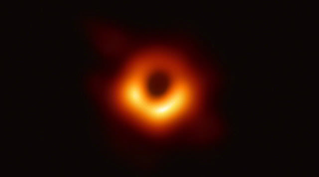

个人信息 姓名：youchen 学校：youchen 性别：youchen 年龄：youchen 兴趣：youchen youchen的所有信息都是youchen咯！(◎｀・ω・´)人(´・ω・｀*) 主要内容 完全不知道写什么的（抓狂） 所以直接从网上拽了篇文章 北京时间4月10日21点整，天文学家召开全球新闻发布会，宣布首次直接拍摄到黑洞的照片。这张照片来之不易，为了得到这张照片，天文学家动用了遍布全球的8个毫米/亚毫米波射电望远镜，组成了一个所谓的“事件视界望远镜”（Event Horizon Telescope，缩写EHT）。 从2017年4月5日起，这8座射电望远镜连续进行了数天的联合观测，随后又经过2年的数据分析才让我们一睹黑洞的真容。 